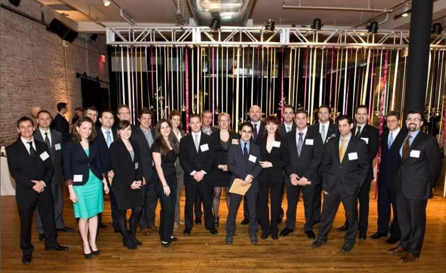

Sandeep is a hospitality professional with over a decade of experience, primarily in mid and senior-level managerial positions, at fine dining restaurants, particularly Michelin 1- and 2-star establishments, in New York City, United States of America. As you may be aware, Michelin stars are highly esteemed and considered equivalent in prestige to an Oscar award by many. To provide some perspective, out of almost 700,000 restaurants in the USA, there are 14 three Michelin-star restaurants, 33 two Michelin-star restaurants, and 178 one Michelin-star restaurants. It's worth noting that there are currently no Michelin-starred Nepali restaurants in the entire world.
Furthermore, he is a certified sommelier, possibly the first among perhaps only a few from our entire country. Sandeep has also completed the advanced sommelier course and appeared for the advanced sommelier examination from the prestigious Court of Master Sommeliers Association America. The acceptance rate for the advanced exam itself is extremely rigorous, requiring successful completion of introductory and certified exams, completion of advanced sommelier course (which itself is challenging to secure a seat for), verified hospitality industry experience from a recognized establishments and recommendations. It is important to mention that there are currently 269 master sommeliers worldwide, which is a step above advanced sommeliers.
